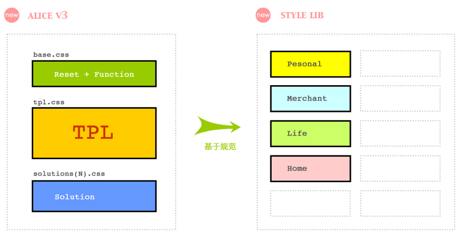

她提供了页面展示的解决方案
如果我们的风格统一，那么代码就会有规可循，我们可以根据命名了解结构，
根据结构了解构建代码的原理。对于垮产品的合作，将是无缝的；对于多人的开发debug，也将是无障碍的。
我们可以在支付宝的各条产品线上看到Alice的身影。
主要从以下两方面来构建Alice：
减少依赖，避免耦合;
统一风格，让代码有规可循，保证团队的协作效率
我们只需要按照规范，使用Alice实现产品的展示
How To Use Alice?
请认真阅读样式库构建规范!

--- |---plugins/ 浏览器兼容解决方案对应的编辑器插件 |---solutions/ 浏览器兼容解决方案对应的编辑器插件 |---- tpl/ 参考的模板文件 |---- w3c/ HTML5/CSS3 标准文档 |---- base.css Alice 的基础，所有样式均基于它,用于CSS reset，定义一些基本的小功能，例如浮动，清除浮动，隐藏，显示等样式
接下来我们讨论一下SeaJS...
SeaJS 本身 遵循 KISS 理念 进行开发*
仅做一件事，做好一件事Case1:集团首页中各种组件实现
一个店铺集团首页可能会有多个组件例如：店铺列表组件（shop-list），最近订单组件（order-list）， 优惠消息组件（prom-list），广告组件（ad-list）等等。
每个组件都会有自己实现业务的js脚本。每个脚本又有可能依赖其他模块的代码。如果按照传统的方式开发， 势必，开发过程中手动引用脚本的地方会越来越多，越发难以管理。 例如shop-list组件shop-list.js依赖shop-list-a1.js,shop-list-a1.js有依赖于shop-list-a2.js
代码可能如下：
<html>
<head>
<script src="./jquery-min.js"></script>
<script src="./shop-list-a1.js"></script>
<script src="./shop-list-a2.js"></script>
<script src="./shop-list.js"></script>
</head>
<body>
<script>
$(document).ready(function () {
//如果复杂的页面中各个组件依赖的其他模块很多的话，那维护与开发的效率就会降低。
......
});
</script>
</body>
</html>
采用SeaJS后，代码可能如下：
//shop-list.js
define(function (require, export) {
var a1 = require('/shop-lit-a1.js'); var a2 = require('/shop-list-a2.js');
.......
a1.someFunc(); a2.someFunc();
.......
export.showShoplist = function () {...}; export.initShoplist = function () {...}; export.pagenation = function () {....};
});
//index.html
<html>
<head>
<script src="./sea.js"></script>
<script src="./jquery-min.js"></script>
</head>
<body>
<script>
$(document).ready(function () {
seajs.use('./shop-list', function (init) {
init.initShoplist();
....
});
});
</script>
</body>
</html>
这样的代码思路会更加清晰，也易于维护。只要需要哪个模块， 就引入那个模块，模块内部的依赖，由模块内部负责引用。
Use a spacebar or arrow keys to navigate